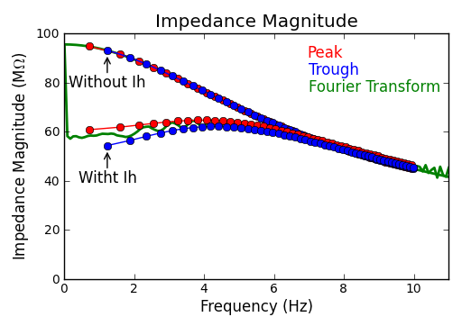
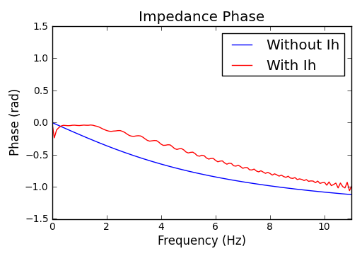
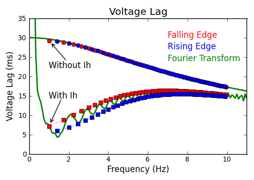

Without Ih:
e_pas = -65 (mV)
gbar_h = 0 (S/cm2)
With Ih:
e_pas = -70 (mV)
gbar_h = 4e-5 (S/cm2)
Sonia's Ih model
Baseline in voltage is removed.


The voltage lag (phase) information is not reliable below 1 Hz.
